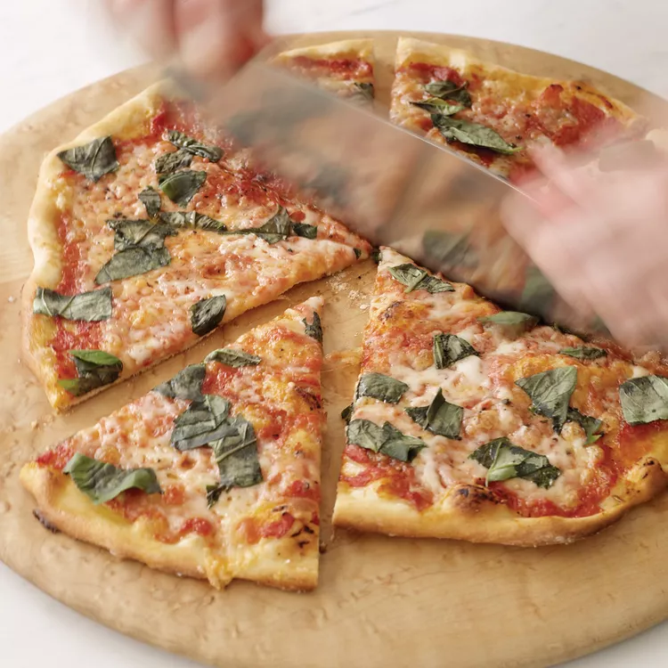

Perfect Pizza Margherita
Ingredients
- 1 envelope active dry yeast
- 2 cups warm water (90°F to 105°F), divided
- ½ teaspoon sugar
- 4 cups all-purpose flour, plus more for dusting
- 2 ½ teaspoons kosher salt
- Extra-virgin olive oil
Toppings
- 1 (14-ounce) can peeled whole San Marzano tomatoes, drained
- ½ teaspoon dried oregano, crumbled
- 5 tablespoons extra-virgin olive oil, divided
- Coarse sea salt
- Freshly ground black pepper
- 2 pounds buffalo mozzarella, thinly sliced
- 32 large basil leaves, torn into pieces
Directions
-
In a large bowl, mix the yeast with 1/2 cup of the warm water and
the sugar. Let stand until foamy, about 5 minutes. Add the
remaining 1 1/2 cups of warm water, flour, and kosher salt and
stir until dough forms. Turn the dough out onto a well-floured
work surface and knead, adding flour as necessary until a silky
and soft dough forms. Use a pastry scraper to help knead the
dough. Transfer the dough to a lightly oiled bowl and brush all
over with olive oil. Cover the bowl with plastic wrap and
refrigerate overnight or for up to 3 days.
-
Transfer the dough to a lightly floured surface; punch down and
divide into 4 pieces. Form each piece into a ball. Rub each ball
with oil and transfer to a baking sheet. Cover the balls loosely
with plastic wrap and let rise in a draft-free place for 1 hour.
-
Meanwhile, set a pizza stone in the oven and preheat the oven to
500°F, allowing at least 45 minutes for the stone to heat. Pass
the tomatoes through a food mill set over a medium bowl or pulse
them in a food processor until coarsely chopped. Stir in the
oregano and 1 tablespoon of the olive oil and season generously
with salt and pepper.
-
On a lightly floured surface, stretch one ball of dough into a
13-inch round; transfer to a floured pizza peel, adding flour
where the dough sticks. Spread 1/4 cup of the tomato sauce over
the dough to within 1 inch of the edge. Spread one-fourth of the
cheese over the pizza and drizzle with 1 tablespoon of oil. Season
with sea salt and pepper and slide the pizza onto the stone. Bake
until the bottom is charred and the cheese is melted, about 8
minutes. Scatter one-fourth of the basil on top and let stand for
3 minutes before serving. Repeat with the remaining dough and
toppings.
